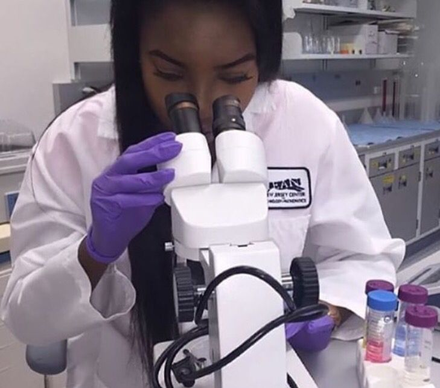

Experienced Microbiologist with expertise in microbial analysis, laboratory techniques, and research in antimicrobial resistance and microbial genomics.
Daily tasks include microbial culturing, DNA extraction, PCR, gel electrophoresis, and data analysis. Active in public health campaigns and community awareness programs.